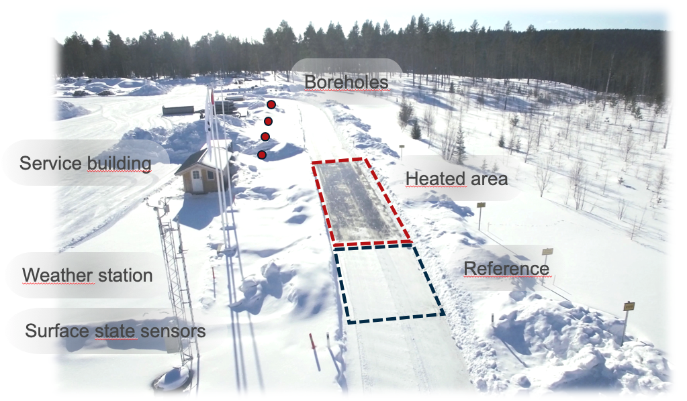
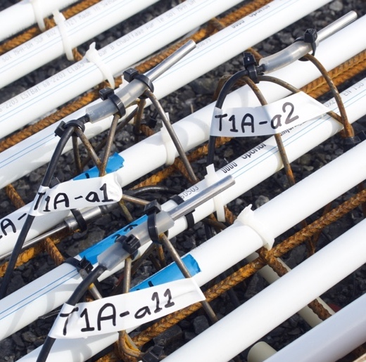
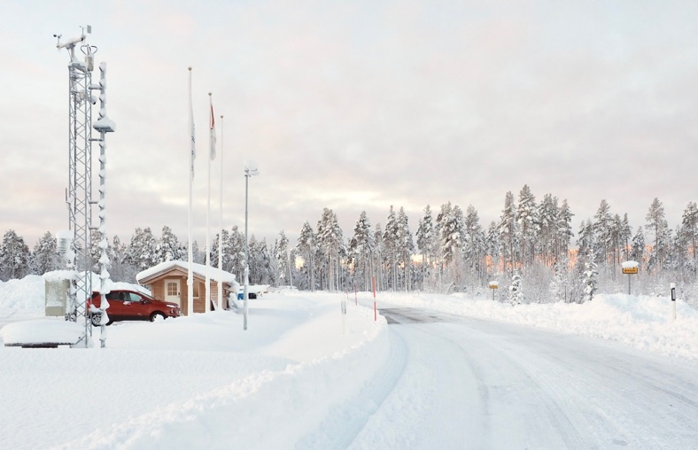

Field station in Östersund
In 2017 a test site for hydronic heated pavements (HHP) was constructed outside Östersund (63.18 N, 14.5 E) in Sweden. The test site is part of a Nordfou project named HERO (Heating Road with Stored Solar Energy) and the major founders are the Swedish, Norwegian and Finnish public road administrations. The aim of the test site is to investigate and prove the concept of using hydronic heated pavements with stored solar energy. The hydronic pavement is used for preventing slippery road conditions in the winter and as an asphalt solar collector in the summer.
The main challenges are set by the harsh Scandinavian climate. The climate puts special demands on how to utilize the limited energy that has been harvested. This is handled by a low temperature system working with supply temperatures below 10 °C.
The figure below gives a general description of the test site. There are five major components namely the weather station, the service building, the borehole thermal energy storage, the hydronic heated surface and a reference surface. The energy used by the system is stored in the BTES that is made of 4 boreholes with a depth of 200 m. Each borehole contains a single u-tube thermal collector. The service building house all the measuring equipment and pumps required for the system. In the service building there is also an electric boiler as backup. The weather station provides the information on the local weather (Air temperature, RH, Wind, Precipitation, Camera) for both controlling and evaluation of the measured results.

The testbed for hydronic heated pavements is constructed with a top layer of concrete that contains the pipe placed at a depth of 62 mm (pipe center) and with a spacing of 50 mm (The three outer most have a distance of 40 mm). Further down the HHP is made as a regular road but with an insulation layer as protection for frost heave but also giving more stable boundary conditions for the numerical simulations. The pipes are made of cross-linked polyethylene (PE-Xa) with the dimensions of 20x2 mm. 10 pipes are going back and forth in the concrete giving a total length of the pipes of about 140 m. The pipes are covering an area of 70 m2.
Measuring system
The measuring system consists of one logger unit coupled to four multiplexers which increases the number of input signals to 80. Today about half of them are used. The core unit is a Datataker 85M which logs readings every 10 minutes. This unit can handle a wide set of different sensors. The data gathered by is transferred to the main computer that handles the control system for the hydronic pavement. To the main computer is the weather station connected. In addition, are two surface state sensors (Vaisala DSC 111) connected that estimates the surface conditions based on optical methods. These sensors provide estimates of the friction level, water-, ice- and snow thickness. Two sensors are installed, one for the heated surface and one for the reference surface. For measurements in the pavement structure PT100 sensors are used. The sensors used are Pentronic 7912000 PT100 1/5 DIN.


Back to main page